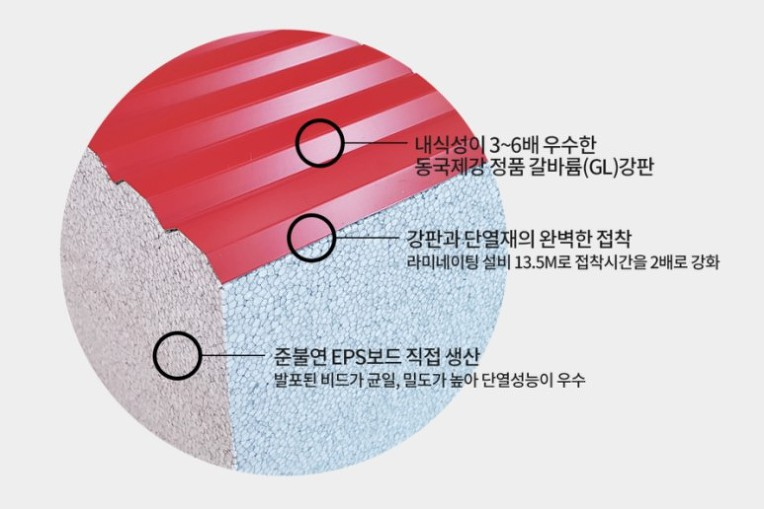

내식성이 우수한 갈바륨
+ 화재에 강한 DK보드
DK보드 판넬은 내식성이 우수한 동국제강 갈바륨 강판과 화재에 강한 DK보드를 심재로 사용한 준불연 나등급 EPS 샌드위치 판넬입니다.
▷강판 : 갈바륨(Galvalume)
▷심재 : 준불연 EPS DK보드 (비드법1종에 특수난연액 코팅 성형)
▷열전도율 : 0.039 W/m·k
▷준불연 : KS F ISO 5660-1 연소성능시험 적합 KS F 2271 가스유해성시험 적합

EPS 준불연 DK보드를 심재로 사용한 (주)대광판넬 준불연 DK 판넬
내식성이 우수한 갈바륨 강판과
준불연 DK보드 심재로 구성된
대광 준불연 DK보드 판넬 !
대광 준불연 DK보드 판넬은
화재에 강하고 오랜 시간이 지나도 부식 걱정없습니다